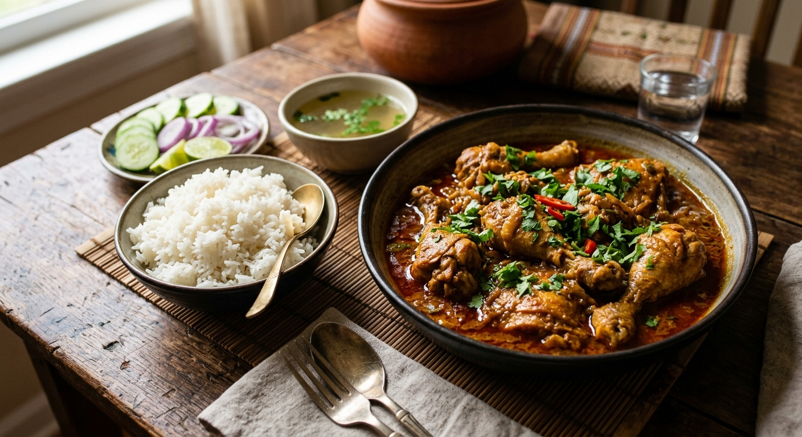

Burmese Chicken Curry, locally known as Chicken Si-Pyan (literally translating to "oil-returned"), is a cornerstone of daily home cooking in Myanmar. This classic dish features tender, bone-in chicken braised slowly in an aromatic base of garlic, ginger, and shallots simmered with turmeric and mild chili powder. Unlike heavier creamy curries, the Burmese technique relies on rendering down the water content until a smooth, rich, reddish-amber sauce emerges, separated neatly by a glossy layer of fragrant spiced oil.
Deeply comforting and balanced, this curry prioritizes the sweet, savory depth of caramelized onions over intense heat, making it accessible yet exceptionally flavorful. It is traditionally served piping hot alongside steamed jasmine rice, crisp fresh cucumber slices, and warm broth, making it an essential centerpiece for any home-cooked Burmese meal.
In a bowl, combine the cleaned chicken pieces with turmeric, salt, seasoning, and fish sauce. Mix well and let it marinate for at least 15 minutes to allow the flavors to penetrate the meat.
Heat the oil in a heavy-bottomed pot over medium heat. Add the pounded garlic, onions, ginger, chili powder (and optional star anise and bay leaf). Sauté continuously until the onions soften, turn golden, and become highly aromatic.
Add the marinated chicken to the pot. Stir well to coat the meat with the onion paste. Cook uncovered for about 5 minutes until the outer layer of the chicken tightens and its natural juices evaporate.
Pour in just enough hot water to submerge the chicken pieces. Cover the pot with a lid, reduce the heat to low-medium, and simmer until the chicken becomes tender (around 15-20 minutes).
Uncover the pot and let the sauce reduce. Once the excess liquid cooks off and a rich sauce separates with oil rising to the surface, adjust salt to taste. Turn off the heat, garnish with fresh coriander if desired, and serve hot.